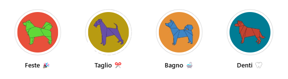

Benessere, cura e raffinatezza per il tuo amico a quattro zampe
Benvenuti da Inugami. Qui la toelettatura è un’arte ispirata all’equilibrio, alla cura e al rispetto profondo per ogni animale. Linda, dopo esperienze in Giappone e Canada, ha portato a Padova un nuovo modo di prendersi cura dei nostri amici a quattro zampe.
✔️ Trattamenti Antiparassitari: Per proteggere i cani da infestazioni.
✔️ Bagni Medicali con Acqua Ozonizzata: Ideali per cani con dermatiti o problemi cutanei.
✔️ Tagli Personalizzati: Commerciali, a forbice, a macchinetta, stripping e trimming.
✔️ Bagni Igienizzanti: Per mantenere l'igiene del cane.
Tutti i servizi sono eseguiti nel rispetto della salute e del benessere degli animali, utilizzando prodotti di alta qualità.
Toelettatura Inugami utilizza prodotti Iv San Bernard, il primo brand europeo a realizzare cosmetici per animali con certificazione Safe Pet Cosmetics®.
Inoltre, l'uso di acqua ozonizzata garantisce massima igiene, effetto sbiancante, deodorizzante e supporta la cura di varie patologie cutanee.
üìç Vieni a trovarci! Ci trovi a Padova, in una zona tranquilla e facilmente raggiungibile.